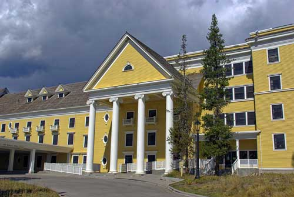

The Temple Inn & Suites
The Temple Inn & Suites, headquartered in Bethesda, MD, builds and manages specialized hotel accommodations near temple locations of The Church of Jesus Christ of Latter-day Saints around the world. The owner-operated company caters to temple workers, patrons, and their families by providing specialized services and accommodations that meet the needs of those patrons. The hotel accommodations and services are available to anyone willing to abide by the terms and policies outlined by the company.
Our unique services provide temple patrons who travel long distances a place to stay and prepare for attending the temple. Weather you are taking a day trip and need a place to change from your travel clothes or you are staying overnight to maximize your time at the temple, we have the right services for you.
Some of our services include free access to changing rooms and bathroom facilities, a reception hall with available catering services and kitchen access, a play room and low cost, short term child care for children of patrons, long-term stay accommodations, and a family search center.
Some of the temples near our popular locations
The Medford, Oregon temple is located in Medford, Oregon. This temple was announced in March 1999 and groundbreaking was on May 20, 1999. The temple was dedicated on April 16, 2000 by James E. Faust.
The Portland, Oregon temple is located in Lake Oswego, Oregon. This temple was announced in April 1984 and groundbreaking was on September 20, 1986. The temple was dedicated August 19-21, 1989 by Gordon B. Hinckley.
The Seattle Washington Temple is located in Bellevue Washington. It was announced in November 1975 and groundbreaking was on May 27, 1978. After just two and a half years of construction it was dedicated on November 17, 1980 by Spencer W. Kimball, which was the last temple he dedicated.
The Seattle Washington temple is one of only five temples featuring the angel Moroni statue holding the gold plates. It is also one of few temples with a west-facing Moroni.
The Spokane Washington temple is located in Spokane, Washington. This temple was announced in August 1998 and groundbreaking was on October 10, 1998. The temple was dedicted on August 21-23, 1999 by Gordon B. Hinckley.